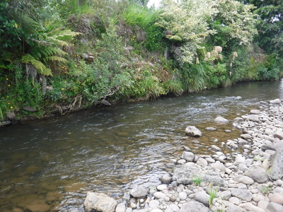
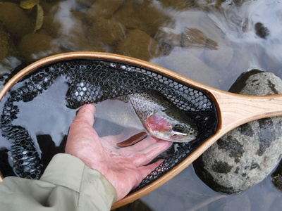
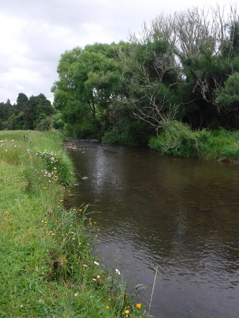
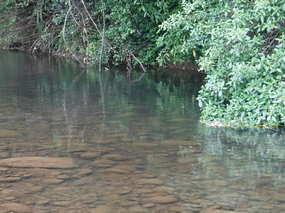

釣行日誌 ＮＺ編 「一期一会の旅：A Sentimental Journey」
初めてのサイトフィッシング
11/30(FRI)-2
１時間ほど釣り上がったが、まったく魚の反応が無い。
『こりゃ、あのアメリカ人フライフィッシャーの言うとおり、本当に鱒は居なくなってしまったのかな？』
だんだんと猜疑心が頭をもたげてきたが、我慢してブラインドでの釣り上がりを続ける。先日ジャックさんのお宅で、今度はこの川を試してみるつもりですと彼に言うと、
「うーん、あの川は今はどうかなぁ？ 上流域に大規模な乳牛の牧場が出来て、水質が悪くなったんじゃないかなぁ....。」
と言っていたことが思い出された。見込みは薄いのか？
さらに30分ほど遡行し、対岸の藪下、ちょっとした瀬の深みから待望の１尾がドライに出た。


サイズの割りにはよく引いて、この小渓流のために持参した、4-5番指定の柔らかいパックロッドを曲げて楽しませてくれた。しかし、昨日までのお気楽なスピンフィッシングとは大違いで、フライフィッシングとはこれほど難しい釣りだったのかなぁと改めて稽古不足を実感した。
山岳渓流とは言え、この区間は緩やかに牧場の中を流れており、あまりポイントがはっきりしない。

ダラダラと流れる瀬が続き、鱒の居着けそうな深みが少ない。などと岸辺を歩いていたら、不意に石の下から大きな鱒が飛び出して上流へと逸走して消えた。
『おお！ 居ることは居るんだなぁ！』
未熟で不用心な川歩きを棚に上げて感心した。
また別の長い深瀬の尻でも大きなレインボーらしき魚影を驚かせてしまって逃げられた。ストーキングの技術も錆び付いてしまったらしい。
左曲がりの小淵で、流してきたウルフの下で体側の銀色が反転した。
『おっ！出たな！ 居る居る....レインボーだな。』
ドライフライを見切られて、もう少し小ぶりなアダムスに替えようかと思ったが、水面が暗く見にくかったのでビーズヘッドのフェザントテールを選んで、ティペットの上に白いヤーンでインジケーターを付けてみた。いざ投げ込んでみると、反応は無く、淵の巻き返しをぐるぐるとインジケーターが回っているだけ。タナが少々深すぎたらしく、鱒の定位位置よりも底の方を流れてしまったようだ。何度か打ち返しているうちに、スレているレインボーは怯えて隠れてしまったようで、結局なしのつぶてに終わってしまった。インジケーターのサイズも大きすぎたかも知れない。いろいろと反省の釣りになった。
ここぞというポイントの背後には藪があってバックキャストのスペースが無かったり、水面まで枝が覆い被さっていたりして難しいことこの上ない。しかしこの川はフライオンリーなので、ルアーに逃げるわけにはいかない。
緩やかな瀬尻、草の陰に、褐色の紡錘形が見えた。

鱒だ。初めてのサイトフィッシングにいささか緊張しつつ、背後に注意しながらロイヤルウルフを遠投する。草の上手に落ちたドライがゆっくりと流下して鱒の頭に近づいた瞬間とんでもなく大きな水しぶきが上がった。
『！！！』
思わず大合わせを入れたがなぜか乗らず、フワッとラインが戻って来た。
『ええ～っ！？ 何で今ので掛からんのだ？』
フックを調べたが異常は無かった。ティペットが切れたわけでも無い。実に惜しい１尾、大きな鱒だった。
釣行日誌ＮＺ編 目次へ
サイトマップ
ホームへ
お問い合わせ